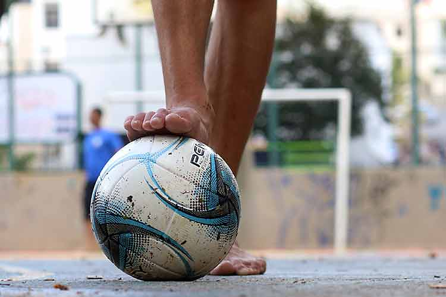

Texto de Matheus Vasconcelos

No início do mês de fevereiro, o Comitê Olímpico Brasileiro anunciou a exclusão do futsal da edição deste ano dos Jogos da Juventude no Brasil. Ou melhor, o Comitê decidiu por excluir de maneira unilateral milhares de jovens de um importante evento que compõe as competições escolares no Brasil.
Toda a comunidade do futsal brasileiro, incluindo os principais clubes do país, como foi o caso da NOTA DO MAGNUS FUTSAL, repudiaram a decisão do Comitê. Afinal, estamos falando do esporte em que o Brasil ainda é considerado a principal potência mundial e que é o esporte mais praticado nas escolas do país.
A própria Ministra do Esporte, Ana Moser, endereçou carta ao COB para entender o motivo de tal decisão. O Comitê, em resposta, destacou que um dos motivos da decisão foi a necessidade de alinhamento dos jogos com a agenda olímpica, apontando que o futsal era o único esporte não reconhecido como olímpico dentro dos jogos da juventude. Além disso, o COB destacou a necessidade de ampliar o acesso de jovens aos demais esportes olímpicos através dos jogos e que isto não afetaria de maneira negativa o futsal no Brasil.
Porém, devo destacar que a decisão ainda é reflexo da falta de consenso entre o Comitê Olímpico Internacional – COI e a FIFA. Ambas as entidades são responsáveis pela realização de megaeventos em nível mundial e a preocupação das entidades paira no impacto que eventos distintos causam em suas entidades. A juventude nessa história sobre “quem manda em que e quem ganha com o que”, com o perdão das palavras, as entidades querem mais que se dane.
E sim, a mensagem dessa decisão de retirada abrupta do futsal dos jogos no linguajar popular seria simplesmente um gigante: Que se danem!
Por isso, avalio que tal decisão tem apenas uma prejudicada nesta história e que sofrerá com os danos dessa decisão: A própria juventude brasileira. Afinal, a exclusão não parte de um diálogo com a modalidade, tampouco com os jovens brasileiros que tem essa como uma das poucas oportunidades dentro do futsal brasileiro e muito menos envolve uma decisão articulada entre as entidades que responsáveis pelo futsal no Brasil e o COB.
A exclusão acaba por punir apenas a juventude brasileira e prioriza unicamente os interesses (sob a justificativa de planejamento) econômicos e políticos do Comitê Olímpico. De outro lado, não podemos isentar a CBF que hoje administra o futsal no Brasil, tampouco a FIFA. Aliás, o silêncio de tais entidades também é ensurdecedor, sempre deixando treinadores, clubes, atletas e jovens à mercê do seu próprio poder de articulação para manifestar repúdio à decisão. Algo que certamente não aconteceria se o COB estivesse mexendo com a galinha dos ovos de ouro que é o futebol no Brasil.
No final das contas, perde o futsal no Brasil, perde a juventude do esporte mais praticado nas escolas e praças brasileiras, perde o esporte no Brasil.

Sobre o autor
Matheus Vasconcelos
Amazonense, psicólogo, especialista em psicologia do esporte e mestre em saúde pública (Fiocruz Amazônia).
Associado ABRAPESP e integrante da Comissão de Atualização Profissional.
Idealizador da Escola de Psicologia do Esporte (E.P.E) e Escola de Psicologia do Atleta (E.P.A).